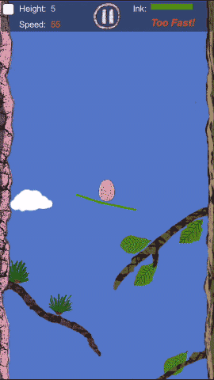

My Third Indie Game:
In MobileChat, You can:
With Webphone, You can:
Link Up! A 2D web game with html5 canvas. Have a try!
A growing ivy anomation without FLASH, Cross Browser!
You can write article with word suggestion, This show you how easy to write a "fashion" article. Try to type some words!
Cross browser, Non-flash, Pure web-based chart
Infinite Timeline, drag to scroll
Gplot drawn the relation of data, dragable
My servant? Who is that? Just talk to ...
Normal Distribution Curve also know as Bell Curve, this demo let you to use the three control line in the chart to select Median and selected area.
Zkjs is a opensource project that contains serveral Javascript components:
These components is for the good of ajax, they are event-driven, all this work fine in firefox, chrome, safari and IE.
A simple web framework for java, with flexible and dynamic feature, it is somewhat like asp.net, the core idea is simple and pure, you can handle it go-as-you-please！
Supply a jni library of the unrar in the windows-32 platform. You can unpackage rar format file with pure java api. But this only support windows PC.